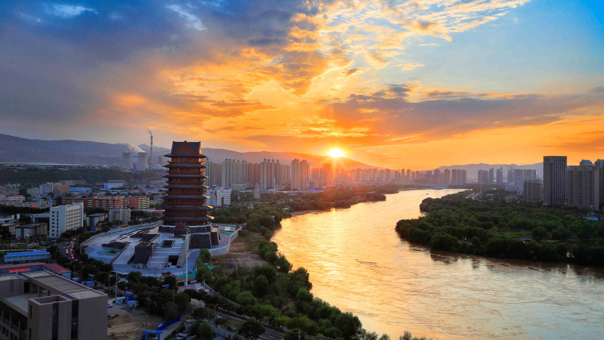
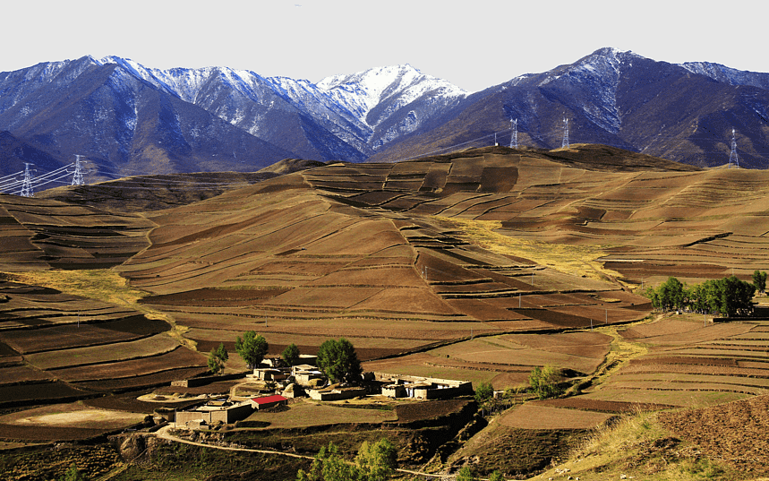
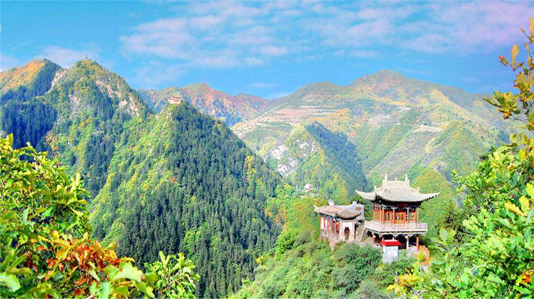

The Yellow River Bund is a 40-kilometer-long scenic belt along the Yellow River, stretching across Lanzhou’s downtown. It’s the city’s most beloved natural spot, where locals and tourists come to walk, cycle, and enjoy views of China’s “Mother River.” Key highlights include the Yellow River Mother Sculpture (a 6-meter-tall stone sculpture of a mother holding a baby, symbolizing the river’s nurturing role), the Waterwheel Corridor (a row of ancient wooden waterwheels used for irrigation), and the Zhongshan Bridge (a 100-year-old iron bridge known as “the First Bridge over the Yellow River”). You can cycle along the riverside path (bike rental: 5 CNY/hour), sit on a bench to watch the river flow, or take a short boat tour (80 CNY/adult) to see the city from the water. At sunset, the river turns golden, making it a perfect photo spot.
Sunset (6:00 PM–7:30 PM): Golden light on the river; cool breeze.
Autumn (September–October): Clear skies; no dust or heavy rain.
Entry Fee: Free (most of the scenic belt, including the Mother Sculpture and Waterwheel Corridor).
Zhongshan Bridge: Free to walk across; bridge observation deck: 10 CNY/adult.
Boat Tour (30 mins): 80 CNY/adult; 40 CNY/children (1.2m–1.4m).

Baita Mountain, located north of the Yellow River, is a 1,700-meter-tall mountain named after the White Pagoda (a 13-meter-tall Buddhist pagoda built in the Yuan Dynasty). It’s a popular spot for nature lovers and hikers, with well-paved trails winding through pine forests and past small pavilions. The main trail leads to the White Pagoda at the mountain’s top, where you can enjoy panoramic views of Lanzhou’s downtown, the Yellow River, and the distant Qinghai-Tibet Plateau. Along the way, you’ll pass the Baita Temple (a small Buddhist temple with ancient statues) and the Viewing Platform (a great spot for photos of the river and city). The hike takes about 1–1.5 hours (easy to moderate), and the fresh mountain air is a welcome break from the city’s bustle.
Morning (9:00 AM–11:00 AM): Cool temperatures; less crowded trails.
Spring (April–May): Wildflowers bloom along the trails; green pine forests.
Entry Fee: 5 CNY/adult; free for kids under 1.2m.
White Pagoda Temple: Included in the entry fee.
Cable Car (One-way): 20 CNY/adult (for those who don’t want to hike; takes 10 minutes to the top).

Xinglong Mountain, 60 kilometers southeast of Lanzhou, is a lush national forest park known as “the Green Pearl of the Loess Plateau.” Covering 294 square kilometers, it’s covered in dense pine forests, bamboo groves, and wildflowers, with streams and small waterfalls scattered throughout. The park has two main peaks: East Peak (1,952 meters, with steep trails for adventure seekers) and West Peak (2,303 meters, with gentle paths and scenic pavilions). Highlights include the Longquan Temple (a Tang Dynasty Buddhist temple hidden in the forest), the Flying Waterfall (a 30-meter-tall waterfall in summer), and the Sea of Clouds (common in early morning, when mist covers the mountain peaks). It’s a great day trip from Lanzhou—perfect for hiking, picnicking, or simply enjoying the quiet of nature.
Summer (July–August): Cool (15°C–22°C), waterfalls are full; escape the city’s heat.
Autumn (October): Maple trees turn red; clear views of the peaks.
Entry Fee: 40 CNY/adult; 20 CNY/students (with ID); free for kids under 1.2m.
Internal Shuttle Bus: 15 CNY/adult (takes visitors from the park entrance to the trailheads).
Guided Hike (Half-day): 80 CNY/person (includes a local guide to point out plants and scenic spots).